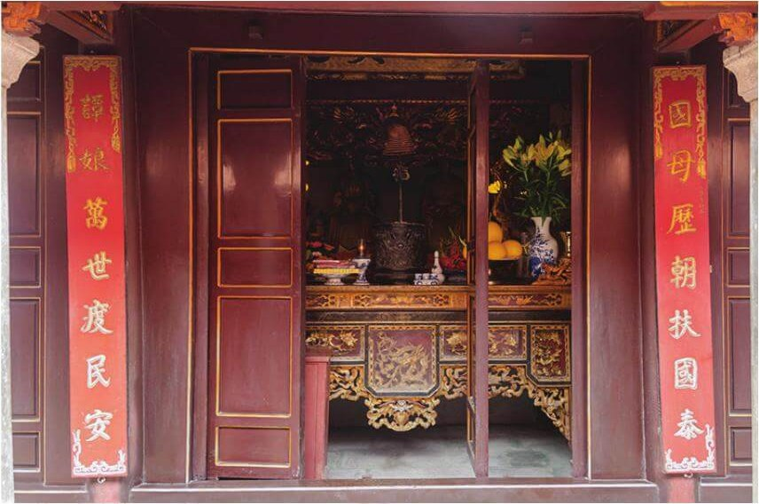

CỐ ĐÔ HOA LƯ
啓聖祠

丁先皇廟遺跡群の全体的な建築の中に位置する啓聖祠は、精神的かつ歴史的に非常に特別な意味を持つ建物です。
ここは、国父である丁公著（ディン・コン・チュ）と国母である譚貴氏（ダム・クイ・ティ）という、民族の傑出した英雄を育てた両親を祀る神聖な空間です。この祭祀空間における建物の存在は、建国に貢献した人々の多大な功労を称えるとともに、大瞿越（ダイ・コ・ヴィエト）国の基礎を築いた初代皇帝の事業の確固たる基盤を作った先人たちへの深い感謝の意を表すという、完璧な全体性を生み出しています。
建築の面では、啓聖祠は19世紀のグエン朝の芸術的特徴を強く残しており、伝統的な「二」の字の形で建てられ、前拝と後宮の2つの建物から成ります。前拝は国父と国母の漢字の位牌が置かれる場所であり、後宮は彼らの像が安置される空間です。

歴史の起源を探ると、国父・丁公著は丁先皇の父親です。『大越史記全書』には次のように記されています。「王の姓は丁、諱は部領（ボ・リン）、ホアルー洞、大黄州の出身... 歓州刺史・丁公著の息子である。公著は以前、楊廷芸（ズオン・ディン・ゲ）の牙将（武将）を務め、歓州刺史の職を任され、後に呉王（ンゴ・ヴオン）に帰順し、旧職を保ったまま亡くなった。」
生前、丁公著は楊廷芸の配下の武将であり、歓州刺史という重責を任され、その後も呉王を補佐し続けました。丁公著がこれらの重要な地位に就いていたことは、彼が威信のある武官であり、10世紀の国の政治的および軍事的な転換点に直接関与していたことを示しています。したがって、ホアルー古都の祭祀システムにおける丁公著の登場は、丁先皇の父親に感謝する意味を持つだけでなく、民族の独立自主の時代の政治的・軍事的基盤の構築に貢献した先人たちの世代を称えるものでもあります。
豪傑な父親に加え、史書はバクニン省で生まれた国母・譚貴氏の生み育てた恩も刻んでいます。夫が亡くなった後、彼女は息子の丁部領を連れて故郷のニンビン省に戻り生活しました。この決定は転換点となる意味を持ち、ニンビンという傑物が生まれる地で、丁部領は守られ、育てられ、成長しました。

民間の資料では、譚氏のイメージは、芦の旗での陣形遊びや友人たちを集めた話を通じて、丁部領の少年時代と密接に結びついています。これらの逸話は、名君に早くから表れた聡明な資質と英雄的な気概を生き生きと描いています。
したがって、国母・譚氏のイメージは、神聖な母性愛という崇高な価値を結晶化しているだけでなく、家庭の基盤を築き、才能ある人物を育て、国家や民族の重大な出来事の創造に貢献するという、ベトナム女性の重要な役割を代表するものでもあります。
時の流れと歴史の浮き沈みを経て、ホアルー古都にある啓聖祠は、民族の「水を飲むときには源を思う」という素晴らしい伝統的な道徳的価値を永遠に保存する場所であり、今日および未来の世代に対して、建国と防衛の初期における先人たちの多大な恩を常に心に刻むよう呼びかけています。